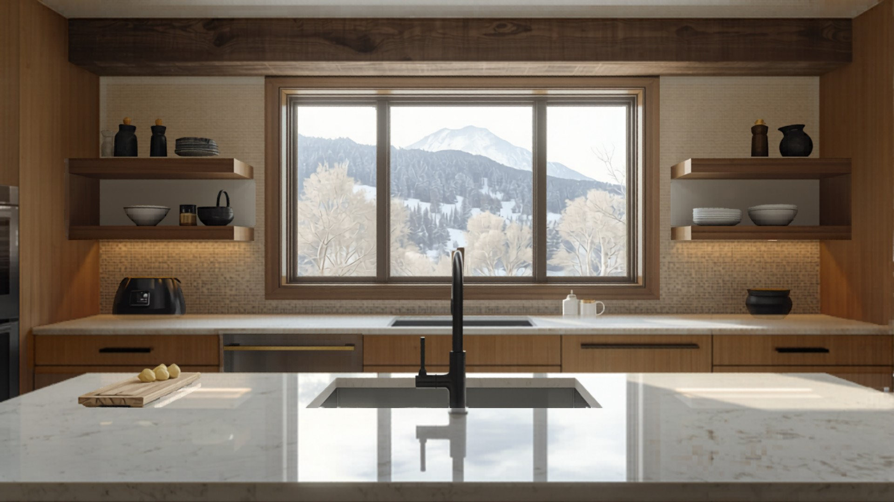
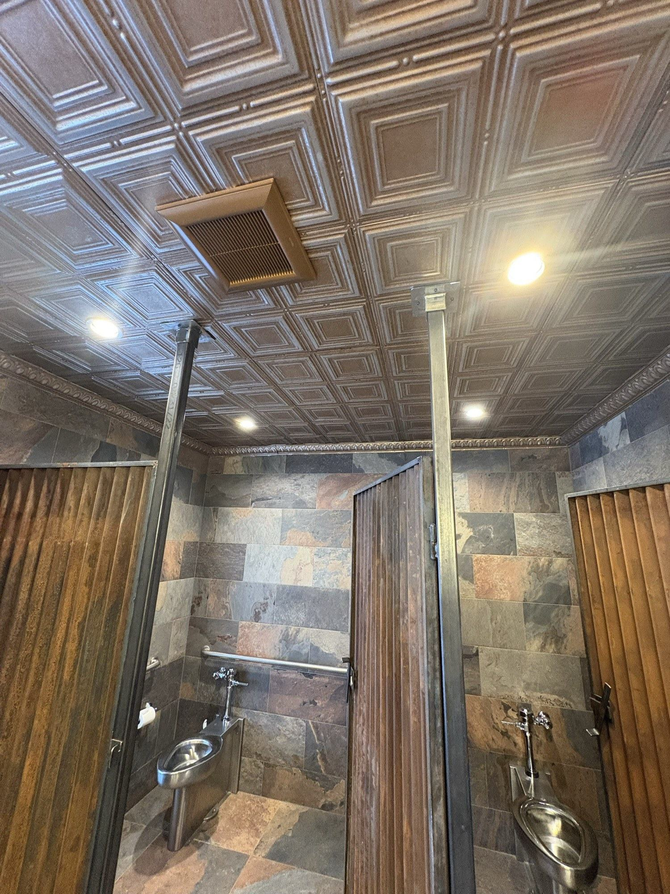
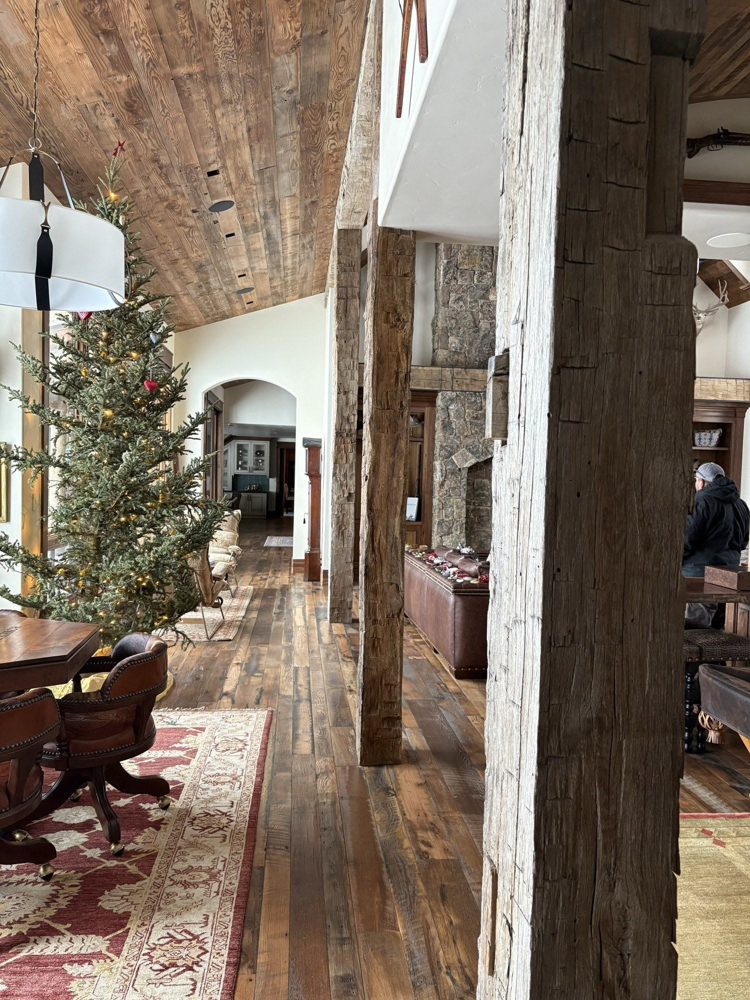
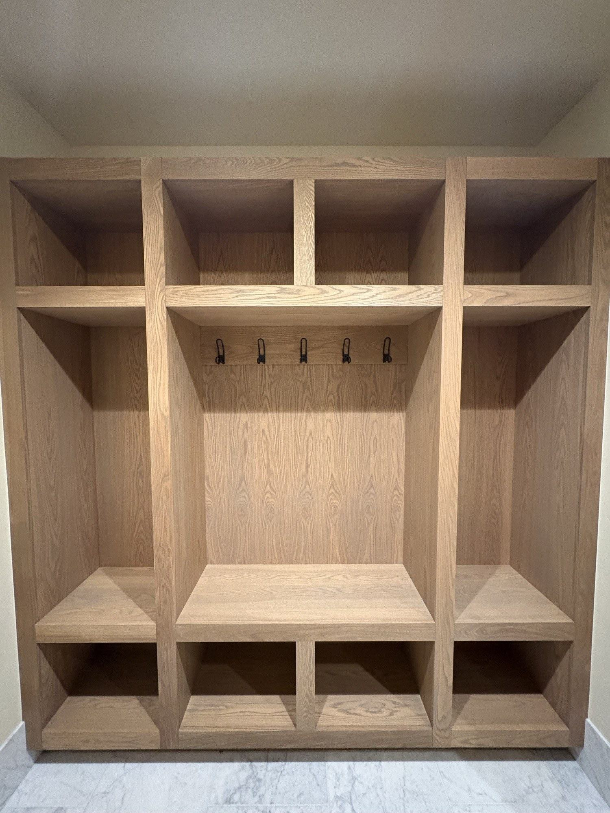
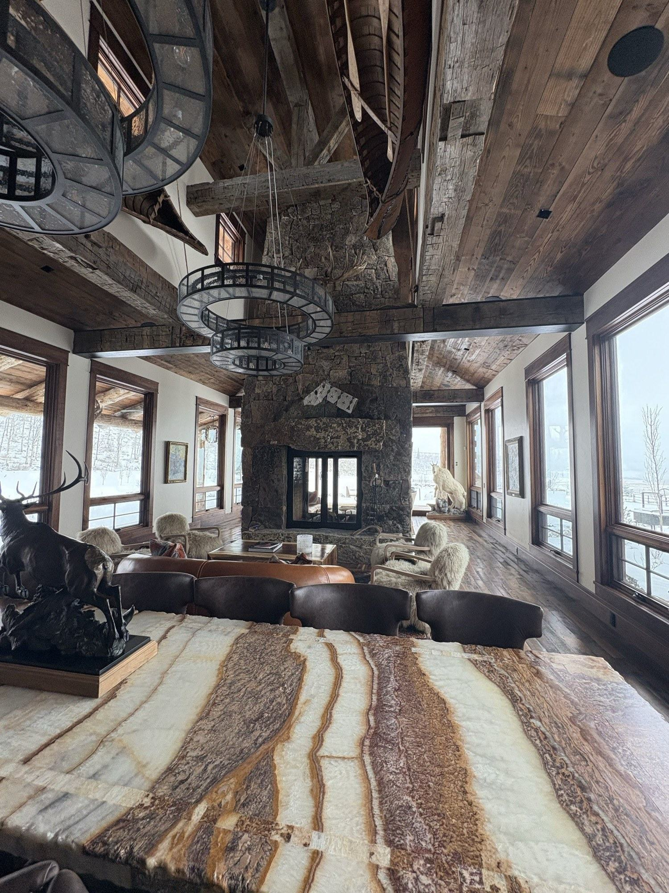

Steamboat's interior remodel specialist — kitchens, baths, basements, and whole-home.
Premium interior remodels for homeowners who want craftsmanship, a written scope before demo, and the owner on the job. You get a photo and a status update every working day and a written recap every week — so wherever you are, you always know exactly where your remodel stands.
Call or text 970-393-6239Photos of your space welcome · 30-minute response, Mon–Fri
Owner-run · written, line-item scope before demo · daily photo updates · verified, insured crew · Steamboat and the Yampa Valley.
Eight kinds of interior remodel, one accountable owner.
Whether it's a single room or the whole interior, the same standard holds — a written scope before demo, daily visibility, and one owner answerable for every trade in your home. Here's each in brief; follow any card for the full detail.

Kitchen remodels
The most ambitious room most people remodel — cabinetry, stone, plumbing, electrical, tile, and appliance logistics on one tight schedule. We plan and rough the plumbing and electrical before a single cabinet box hangs, then template countertops to your actual installed cabinets, not a drawing.
- Stock, semi-custom, or fully custom cabinetry set level and plumb so doors and drawers stay aligned.
- Quartz, granite, natural stone, butcher block, or laminate countertops, templated after the cabinets are in.
- Layout solved around how you cook, with lighting and circuits planned before the boxes hang.

Bathroom remodels
A small room where the work you never see decides everything. Tile and grout are not waterproof on their own, so we build a full waterproofing system behind every wet wall and under every floor first, then set tile second — detailed at the pan, curb, niche, and every corner.
- A full waterproofing system behind every wet wall and under every floor — the part you're really paying for.
- Tub-shower, full walk-in, curbless, or steam — each a different build behind the wall.
- Curbless and aging-in-place details — wider doorways, grab-bar blocking, comfort-height fixtures, bench seating.
Tile shower waterproofing
A tile shower is only as good as what's behind it — and showers almost never leak in the open field of tile, they leak at the transitions. We build the waterproofing system first, then flood-test the finished pan overnight before any tile goes on.
- A sloped pan and a continuous bonded membrane — the actual waterproof layer, not the tile.
- Benches, niches, and curbless entries built into the waterproofing and pitched to drain, never cut through it.
- A flood test before tile, plus heated tile floors, large-format tile, and steam showers planned up front.

Whole-home interiors
When it's kitchen, baths, floors, trim, lighting, and built-ins all at once, the hard part is sequencing a dozen trades so each sets up the next instead of tearing out the last. We run one job at a time and build a phase plan around how you'll use the home during the work.
- Every interior trade sequenced under one accountable owner, in the right order.
- A written phase plan before demo, staged to keep the home livable where it can.
- A documented selection schedule with decision-by dates and long-lead items ordered early.
Basement finishing
The most usable square footage you can add per dollar — but a basement sits below grade against cold soil and ground moisture, in a high-radon county. We handle the hidden layers first, then build the finished space on a base that holds up to a Steamboat winter.
- Moisture control and vapor management handled before the framing goes up.
- Code-compliant egress and radon testing and mitigation planned into the layout from the start.
- Foundation walls insulated to Climate Zone 7B, with HVAC and below-grade plumbing routed first.

Custom closets & storage
Good storage is the difference between a mountain home that works and one that's always a little buried — in ski jackets, wet boots, and pantry overflow. We design built-ins around how you live, using the full height of the space and giving every type of thing its own home.
- Walk-in or reach-in layouts designed to your wardrobe and your room, anchored to hold real weight.
- Material grade from durable melamine to furniture-grade painted and wood built-ins.
- Mudrooms, pantries, laundry rooms, and home offices built for real winter traffic.

Flooring
A new floor changes a home more than almost any other single project, and most of what makes it last happens before the first plank goes down. We make the subfloor sound, level, and flat, moisture-test the slab, and acclimate wood to your home before any material is set.
- Subfloor made sound, level, and flat, with the slab moisture-tested before any material goes down.
- Hardwood, tile, and luxury vinyl chosen for the room, the climate, and whether you have radiant heat.
- Clean, level transitions and the right threshold at exterior entries, so snowmelt has somewhere to go.

Soundproofing
A genuinely quieter room isn't one product you buy — it's how the wall, floor, and ceiling are built, sealed, and detailed together. Almost all of that work lives inside the assembly, so it's far cheaper to build in while a room is already open than to retrofit later.
- Mass, decoupling, cavity insulation, air-sealing, and a solid-core door — matched to which paths let noise in.
- Targeted to the room — condos and rentals, media rooms, home offices, and bedrooms are different jobs.
- Best built in during a remodel or basement finish, while the framing is exposed.
Steamboat building considerations we plan for first
An interior remodel up here still answers to the building first. Two factors shape almost every interior decision — how tight and warm the home holds at altitude, and what is hiding behind the finishes in an older house. We resolve both before demo.
Snow load, engineered per parcel
Ground snow load in Routt County is a case-study zone — there is no single number that covers every lot. We verify the load for your specific parcel via Routt County GIS and build the roof, deck, and frame to it, so nothing is sized to a regional assumption.
Wildfire and the WUI
Much of the county sits in a wildland-urban-interface zone. On mapped parcels we build ignition-resistant assemblies — a Class A roof, ignition-resistant siding, and ember-resistant detailing at vents and edges — and confirm what your parcel requires before we scope it.
Climate Zone 7B energy
At this altitude the envelope sets comfort and the operating cost for the life of the home. We build with continuous exterior insulation and triple-pane glazing, with window U-factors held at or below 0.30 for the climate zone.
Pre-1980 structures
Homes built before 1980 can hold asbestos or lead in old finishes and materials. On any pre-1980 structure we test before demolition, so a remodel never disturbs something hazardous without a plan to handle it safely.
We also build to a 48-inch frost depth countywide, and we plan for remote-delivery lead times — at this distance from suppliers, material can add roughly 3 to 7 days to a schedule, which we build into the plan up front.
The trades behind every remodel — all under one accountable owner
A finished remodel is the sum of the trades inside the walls. We self-perform and coordinate the interior finish work most homeowners end up juggling across three or four separate contractors — under one written scope and one point of contact:
One owner accountable for all of it means no gaps between trades for a problem to hide in — and one number to call when you have a question.
Built-ins and floors run deep enough up here that they have pages of their own — see Closets & Storage and Flooring.
The details that decide whether an interior lasts.
A remodel is judged on the finishes you see — but it lives or dies on the work behind them. These are the parts homeowners rarely ask about and the parts that fail first when a crew cuts the corner.
The three details that fail first when a crew cuts the corner
Shower benches, niches, glass & waterproofing
A tile shower is only as good as the system behind it. Tile is not waterproofing — the waterproofing happens behind the tile, on the substrate, before a single piece is set. We build benches and niches into the waterproofing rather than cutting through it, slope the pan so water actually drains, and detail the wet wall to a full system rated for daily use. Frameless glass and a clean tile layout are the finish; the membrane you'll never see is what keeps your framing dry for the next twenty years. See how we build tile shower waterproofing in Steamboat Springs and the wet-area assemblies in our interiors materials section.
Interior soundproofing
Acoustic insulation and soundproof walls and ceilings are easiest — and far cheaper — to build while the walls are already open during a remodel. A media room that doesn't bleed into the bedrooms, a home office that stays quiet on calls, a shared wall in a condo or a guest suite over a great room: the time to handle it is now, not after the drywall is closed. We frame and insulate for sound as part of the same scope. See how we approach soundproofing in Steamboat Springs, or tell us about the room and we'll spec it into your remodel.
Interior finish packages
Tile, flooring, trim, cabinetry, lighting, and fixtures all land in the same home, on the same schedule — and they look right together only when they're chosen together. Instead of leaving you to coordinate six selections across as many suppliers, we pull them into one coordinated finish package, with clear allowances so nothing is assumed. Browse the finishes we build with in our interiors materials section, see completed craftsmanship on Projects, and we'll help you land on a package that fits the home and the budget.
Why homeowners choose Elk Ridge for their remodel.
Elk Ridge is owner-operated, and interior remodels are what we specialize in. Whether you live here or manage your home from out of state, the same written promises hold on every job. This is The No-Surprise Steamboat Remodel — a written scope before demo, a fixed plan, daily visibility, and the owner on the job, so the only surprise is how much you love the result.
- 01
You hear back within 30 minutes.
Call or message during business hours and you get a response within 30 minutes. You never chase us.
- 02
A written, line-item scope before demo day.
Your scope is signed before anything comes off a wall. The price changes only by a change order you approve in writing — never a surprise invoice.
- 03
A photo and status update every working day.
Plus a short written recap every week, sent to whoever you want, wherever you are. A remodel you can follow from your phone.
- 04
Your home protected and broom-clean every day.
We protect the rest of your home, leave it broom-clean at the end of each working day, and finish with a professional deep-clean at completion.
- 05
Every sub verified before they enter your home.
Current insurance certificate, Colorado trade license where applicable, and a signed agreement on file — before they set foot inside.
- 06
The owner on every job.
Not a foreman, not a relay. You work with us directly, on the same number, the same business day.
A written 2-year workmanship warranty. Above the local one-year norm, and final payment only after you sign off at the satisfaction walkthrough.
From first call to final walkthrough.
Every remodel runs the same documented path, so you always know what happens next.
- 01
Walkthrough
A 20-minute call with us, then an on-site walkthrough (or a photo and video walkthrough for remote and second-home owners). We take scope notes live and flag what the description doesn't account for.
- 02
Written proposal
A line-item scope with clear allowances and a realistic timeline, delivered within 48 hours of the walkthrough. You know exactly what you're getting before anything is signed.
- 03
Approve
Sign the scope. We walk you through the change-order policy upfront — nothing changes, and nothing gets billed, without your written okay.
- 04
Build
One job at a time, subs sequenced so they aren't fighting each other, with a photo and status update every working day and a written recap every week.
- 05
Final walkthrough
We walk every inch together, resolve open items, deep-clean the space, and your written workmanship warranty starts the day you sign off.
A Steamboat remodel is not a flatland remodel.
At 6,700 feet, the details that protect a mountain home are the ones a flatland crew skips. We build interiors to what Steamboat actually requires — and we tell you what your specific home and parcel need before demo, not after.
Older homes get tested before demo.
Homes built before 1980 can carry asbestos and lead. We test before anything comes off a wall, so demolition is safe and legal — not a discovery mid-project.
Insulation built to Climate Zone 7B.
Mountain interiors lose heat through the details. As walls open up, we insulate to the climate zone so the finished space is warmer, quieter, and cheaper to heat through a real winter.
Waterproofing and radiant heat tuned for altitude.
Wet areas get a full waterproofing system, and radiant floor heat is tuned for how slabs and substrates behave up here — not set to a sea-level spec.
Snow load and structure verified before we move a wall.
Opening up a layout or finishing a lower level can touch the load path. We verify snow load and the structure first, so the change is engineered, not assumed.
Fire-zone requirements checked per parcel.
In mapped WUI (wildland-urban interface) parcels, material and assembly requirements apply. We confirm what your parcel requires before promising a specific assembly.
Remote-delivery lead times planned in.
Material lead times run long with remote mountain delivery, so we build the schedule around real delivery dates instead of letting a backordered finish stall your job.
Tell us about your home.
Craftsmanship you can see.
The photos here show real finished craftsmanship completed by our crew, used with permission. We don't show stock images or another company's work as our own. As our first Elk Ridge interior remodels complete with homeowner consent, they'll be added here with full before-and-after sets.
Materials we build with — interiors.
Inside, the climate problem flips from UV to moisture swings — dry winter heat and wetter summers move wood, grout, and trim. We've grouped the finishes into six families so you can see the choices without drowning in them. The swatches below are concept visuals for the finish families, not photos of finished work.
Surfaces & Countertops
Sintered stone (Dekton, Neolith), large-format porcelain slabs, and tile. Sintered stone gives you the marble look without the maintenance — non-porous, no sealing, stable from a kitchen counter to an outdoor run.
See full kitchen & bath surface details →Flooring
Wide-plank engineered European white oak (wire-brushed, matte) and luxury vinyl / rigid-core SPC. Engineered, not solid — built to stay flat over radiant heat and through dry-winter, wet-summer swings, with a durable vinyl tier for rentals and mudrooms.
See full flooring details →Heated Floors
Electric radiant (room-by-room) and hydronic radiant (whole-floor). Warm tile underfoot in the bath and entry, or hydronic radiant through the whole floor — always over an uncoupling layer so the tile does not crack in dry mountain air.
See full heated-floor details →Shower Waterproofing
Waterproofing is one continuous, single-manufacturer assembly behind the tile — a bonded sheet membrane for clean alcoves, a liquid membrane the moment there is a built-in bench or arched niche, with prefab niche and bench options. Curbless with a linear drain is the spa standard.
See full shower waterproofing details →Cabinetry, Color & Finishes
The pieces that set the room's tone — warm woods, fluted millwork, and intentionally mixed metals, coordinated and sampled in your actual mountain light. This family also carries the details that tie the room together:
- Cabinetry and color, from warm white oak to deep forest and charcoal.
- Hardware and plumbing-fixture finishes — matte black, brushed brass, nickel — coordinated across the room.
- Trim profiles and interior door styles, with layered lighting planned alongside the finishes, not after.
Walls, Paint & Quiet
Tight mountain homes make indoor air quality matter more — low-VOC finishes, artisan plaster for warmth against the glass, and a soundproofed suite assembly for rentals and media rooms. The finishes that shape how a room feels and sounds:
- Zero-VOC, healthy-home paint, sampled in your actual light, which shifts dramatically by season.
- Hand-troweled plaster, limewash, and Roman clay for a warm feature wall.
- The Quiet Suite assembly — mass, decoupling, and sealing — for media rooms, offices, and rentals.
How selections work — you choose, we run it
You choose from a curated palette inside each family, in your home's actual mountain light. From there it's on us: we source it, order it, track every lead time, and install it on the schedule — so coordinating six suppliers never becomes your second job. We'll meet you wherever you are in the process:
What drives the cost of a Steamboat remodel.
Every remodel is priced to your actual home, your finishes, and your scope — so the honest answer is "it depends," and these are the things it depends on. We give you a real range at your walkthrough and a line-item proposal within 48 hours. No number on this page is a quote.
What drives the cost of a remodel
How we keep you in control
Get a real range for your project.
Questions homeowners ask before a remodel.
How do I get started, and what does the walkthrough involve?
Will the price change once you start?
How will I know what's happening if I'm out of state?
Do you do one room at a time, or whole-home remodels?
My home is older. Is that a problem?
Are you licensed and insured?
How long does a remodel take?
Five minutes of prep makes your walkthrough sharper.
You don't need any of this to reach out — but the more of it you bring, the faster and more accurate your written proposal will be. Gather what you can, then send it our way or bring it to the walkthrough.
Not sure what to send? Just reach out — we'll tell you exactly what would help. Need ideas first? Browse our interiors materials and Projects, or see how a job runs on our Process page.
Your remodel starts with a walkthrough.
Tell us about the space and what you have in mind. The fastest path is a five-minute call or text, and you'll have a clear next step before we hang up.
970-393-6239Written proposal within 48 hours of your walkthrough. Calls and texts answered Monday–Friday, 7am–5pm MT — photos welcome. Messages returned the same business day. You reach us directly — no call center, no obligation.